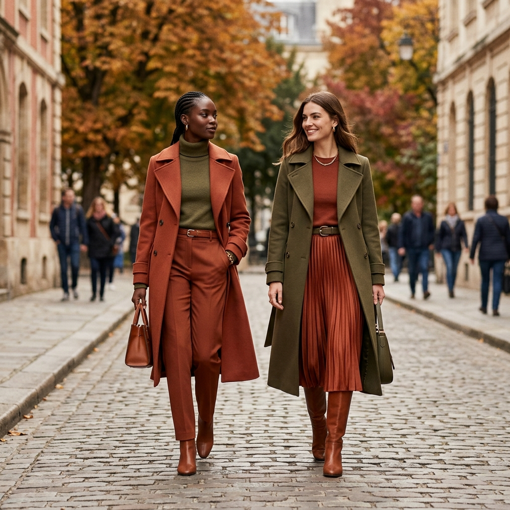
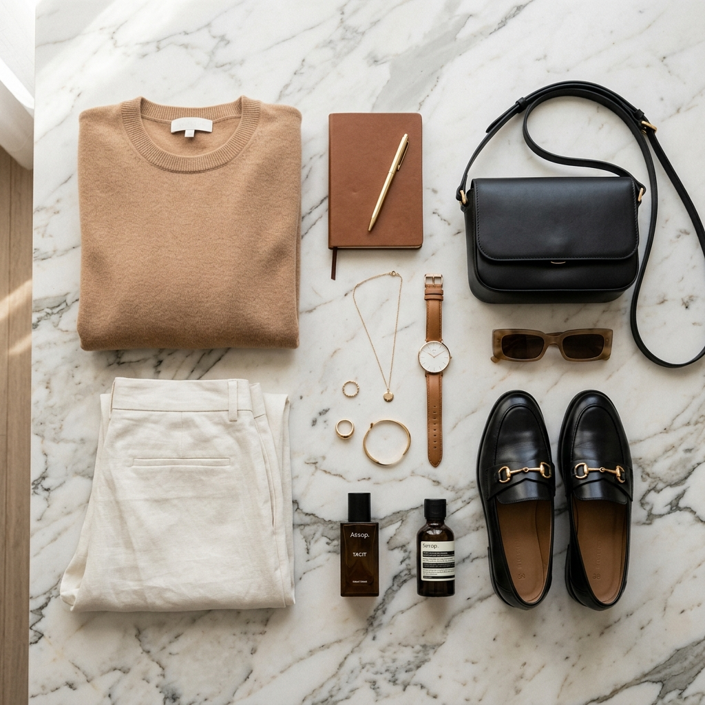
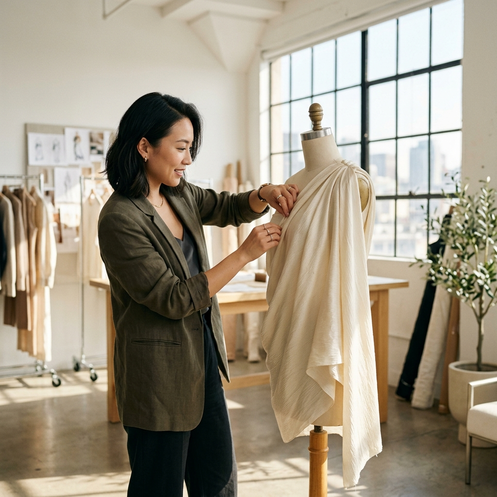
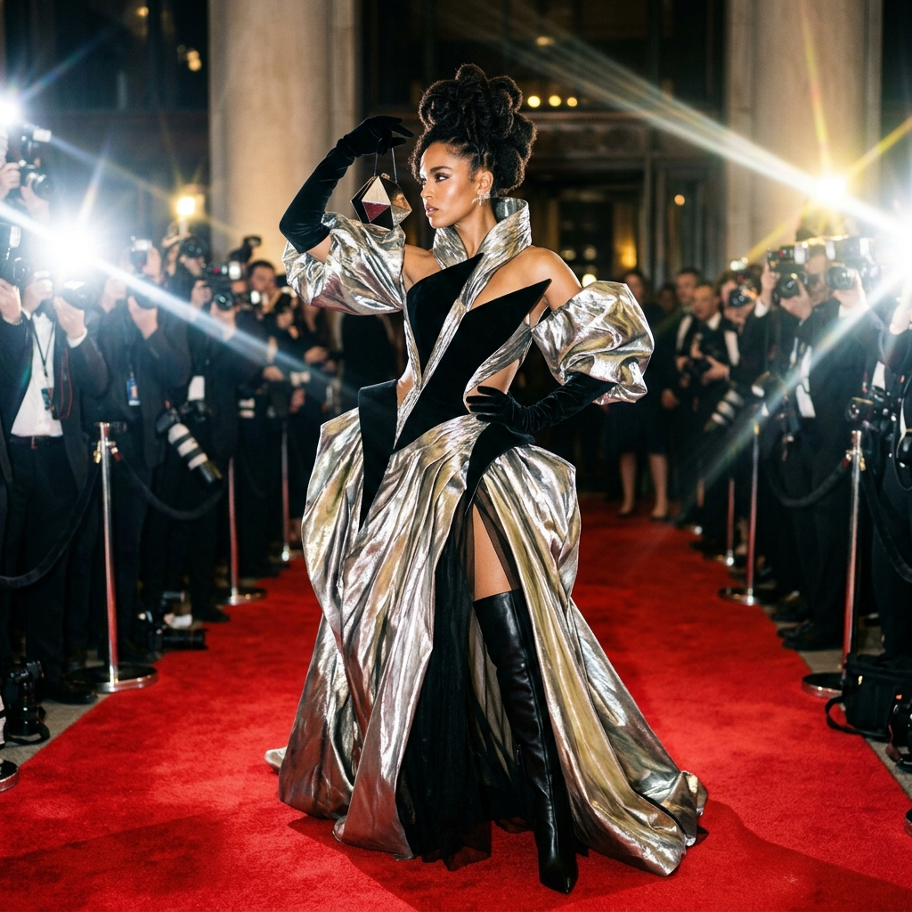
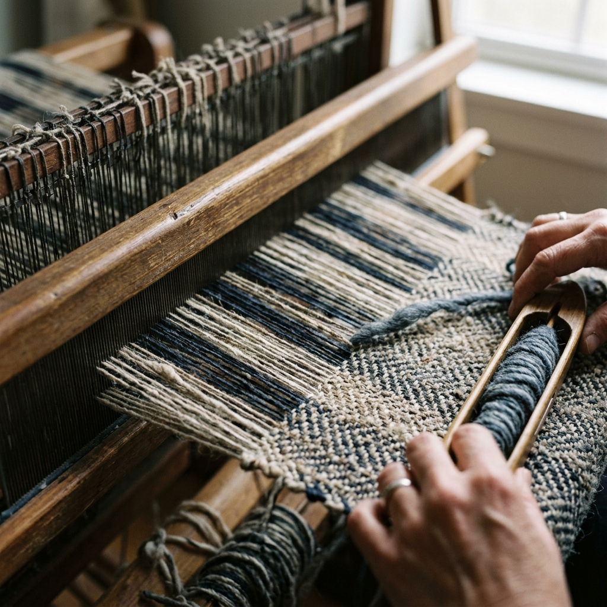

Notes on quiet dressing
Fabric studies, mill visits and styling notes — published from the studio each month.

The Quiet Wardrobe
Nine pieces, one palette. How to build a season of outfits from garments that never compete with each other.
READ THE ESSAY →
Inside the Linen Mill
A week in Northern Portugal with the family-run mill that weaves every metre of our wide-leg trousers.
Read More
Knitwear That Lasts a Decade
Gauge, ply and finishing — the three details that decide whether a cardigan survives its third winter.
Read More
The Case for Oversized
Volume is not the opposite of tailoring. A short study of proportion, drape and ease.
Read More
Style Trends
Showcase the latest fashion trends, seasonal styles, trending colors, patterns, and outfit inspirations.
Read More
Fashion Tips
Practical styling tips, outfit pairing ideas, color combination guides, wardrobe tips, and accessory advice.
Read More
Designer Spotlight
Highlighting famous and emerging fashion designers, their signature styles, and design inspirations.
Read MoreBeauty & Lifestyle
Fashion-related beauty content, minimalist makeup looks, skincare routines, wellness, and lifestyle tips.
Read More
Celebrity Style
Showcase celebrity-inspired outfits, red-carpet fashion, styling ideas, and trending celebrity looks.
Read More
Sustainable Fabrics
An in-depth look at our sourcing practices, from organic cotton fields to recycled wool blends.
Read More